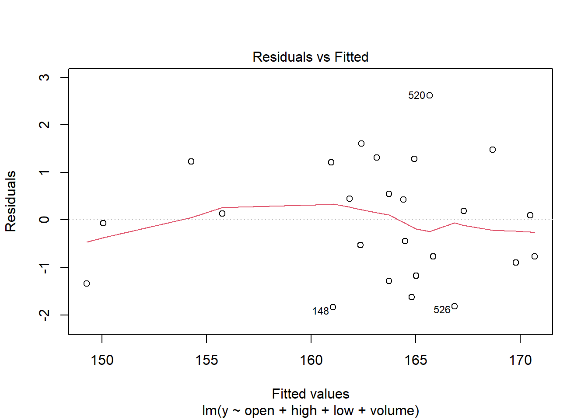
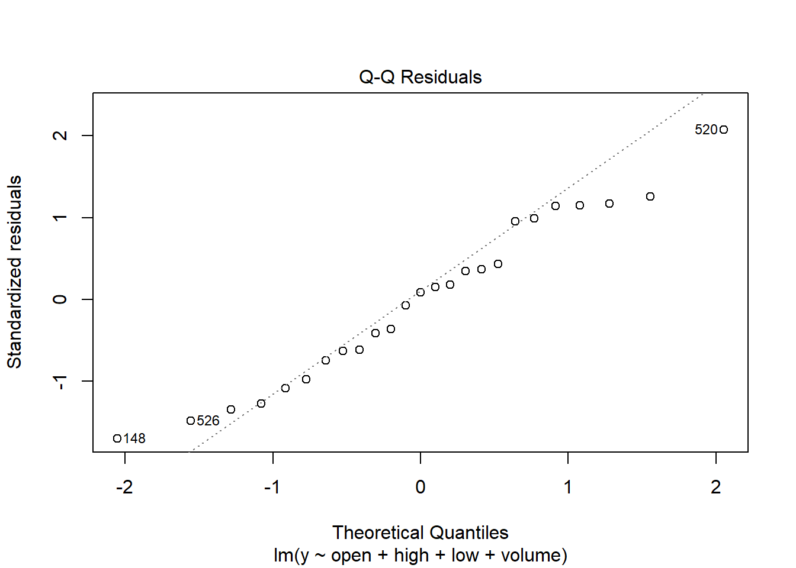
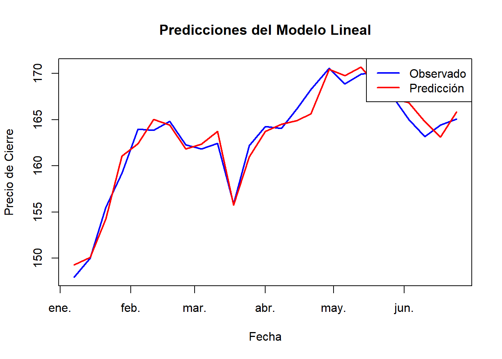

8 Inclusion de variables en el tiempo
# Seleccionar la variable de interés (precio de cierre)
y <- data_ibm$close
# Ajuste del modelo lineal básico
lm_model <- lm(y ~ open + high + low + volume, data = data_ibm)
# Mostrar un resumen del modelo
summary(lm_model)##
## Call:
## lm(formula = y ~ open + high + low + volume, data = data_ibm)
##
## Residuals:
## Min 1Q Median 3Q Max
## -1.8415 -0.8975 0.1009 1.2151 2.6185
##
## Coefficients:
## Estimate Std. Error t value Pr(>|t|)
## (Intercept) 1.226e+01 7.655e+00 1.601 0.1250
## open -2.295e-01 1.463e-01 -1.569 0.1323
## high 5.930e-01 2.138e-01 2.773 0.0117 *
## low 5.714e-01 2.372e-01 2.410 0.0257 *
## volume -5.377e-08 7.505e-08 -0.716 0.4820
## ---
## Signif. codes: 0 '***' 0.001 '**' 0.01 '*' 0.05 '.' 0.1 ' ' 1
##
## Residual standard error: 1.329 on 20 degrees of freedom
## Multiple R-squared: 0.9552, Adjusted R-squared: 0.9462
## F-statistic: 106.5 on 4 and 20 DF, p-value: 3.468e-13# Diagnóstico del modelo lineal: revisión de residuos
plot(lm_model, which = 1) # Residuos vs valores ajustados

# Hacer predicciones con el modelo lineal
predictions <- predict(lm_model, newdata = data_ibm)
# Visualizar las predicciones si es relevante
plot(data_ibm$date, y, type = "l", col = "blue", lwd = 2, ylim = range(y, predictions),
main = "Predicciones del Modelo Lineal", xlab = "Fecha", ylab = "Precio de Cierre")
lines(data_ibm$date, predictions, col = "red", lwd = 2)
legend("topright", legend = c("Observado", "Predicción"), col = c("blue", "red"), lwd = 2)
Coeficientes de Regresión
El intercepto del modelo es 12.26, lo que sugiere el valor esperado del precio de cierre cuando todas las variables independientes son cero.
El coeficiente para ‘open’ es −0.2295, lo que indica que un aumento en el precio de apertura está asociado con una ligera disminución en el precio de cierre, aunque no es estadísticamente significativo.
‘high’ tiene un coeficiente de 0.5930, lo que indica que un aumento en el precio máximo diario está asociado con un aumento en el precio de cierre. Este efecto es estadísticamente significativo (valor p = 0.0117).
‘low’ tiene un coeficiente de 0.5714, lo que indica que un aumento en el precio mínimo diario está asociado con un aumento en el precio de cierre. Este efecto también es estadísticamente significativo (valor p = 0.0257).
‘volume’ muestra un coeficiente muy pequeño (−5.377×10−8−), lo que sugiere que el volumen de operaciones no tiene un efecto significativo en el precio de cierre (valor p = 0.4820).
Bondad de Ajuste
El modelo explica aproximadamente el 94.62% de la variabilidad en el precio de cierre de IBM, como se indica por el R2 ajustado de 0.9462.
Esto sugiere que las variables incluidas (open, high, low, volume) son capaces de explicar una gran parte de la variación en el precio de cierre observado.
Significación Estadística
‘high’ y ‘low’ son las variables que muestran significación estadística en relación con el precio de cierre. ‘high’ tiene un efecto positivo significativo, mientras que ‘low’ tiene un efecto positivo pero ligeramente menor en magnitud.
‘open’ y ‘volume’, aunque presentes en el modelo, no tienen un efecto estadísticamente significativo en el precio de cierre.
Diagnóstico del Modelo
Los residuos del modelo parecen razonables, con una distribución que no muestra patrones claros de no linealidad ni heterocedasticidad (variación no constante de los errores).